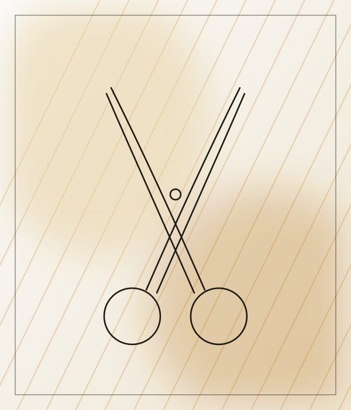
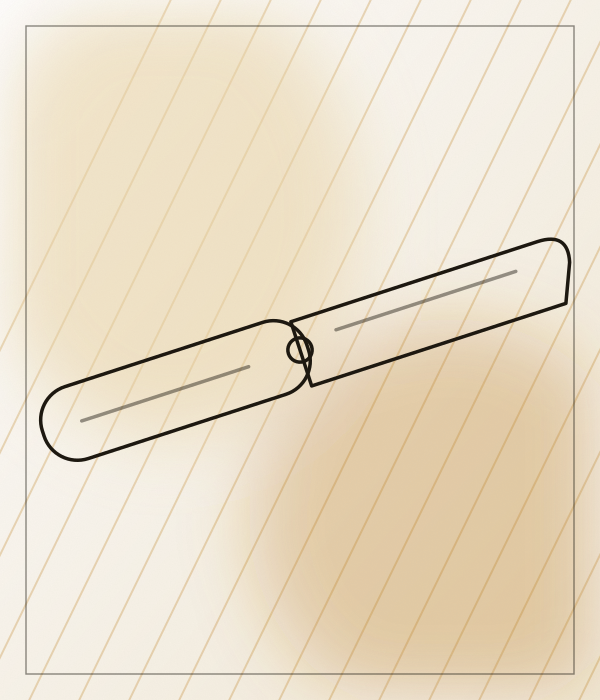
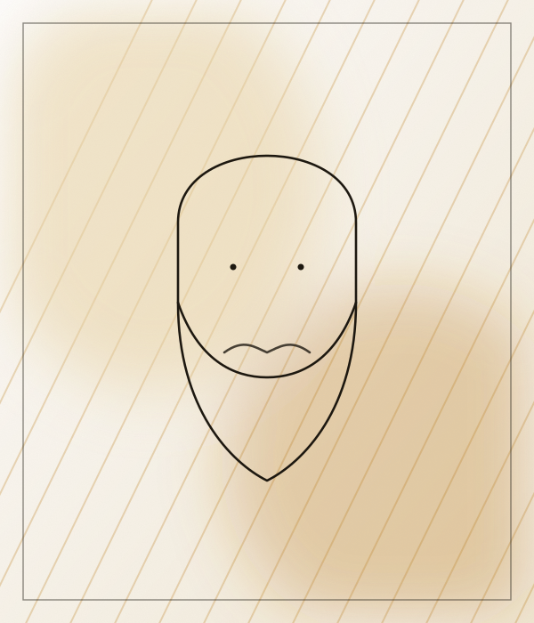
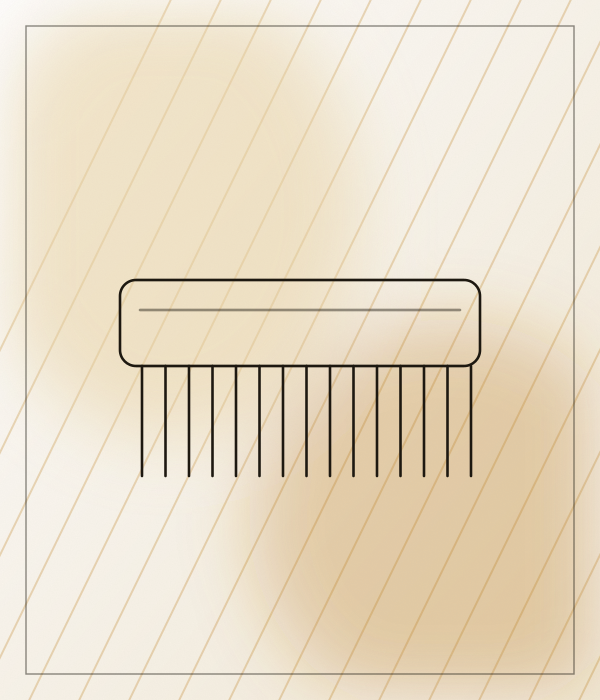
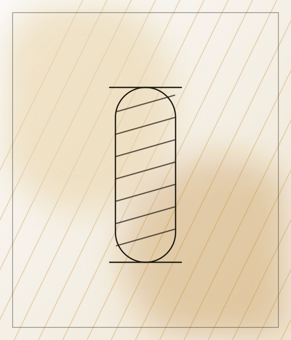

Cortes precisos, a tu estilo. S/50, 45 min
Dinasty Barbershop es una barbería en Magdalena del Mar, con 5.0 de puntaje y 150 reseñas en Google. Ofrece corte clássic (s/50, 45 min). Reserva tu cita y ven a conocernos.
Calificación basada en 150 reseñas de clientes en Google Maps.
Agenda tu cita por WhatsApp en pocos minutos.
Jr. Domingo Ponte 1097. Fácil de encontrar.

Cortes precisos, a tu estilo. S/50, 45 min


Cortes precisos, a tu estilo.


Perfilado y arreglo de barba.


Asesoría para encontrar tu estilo.
Ilustraciones referenciales.
Envíanos un mensaje por WhatsApp.
Dinos el servicio que quieres y cuándo te viene mejor.
Te esperamos en Jr. Domingo Ponte 1097, Magdalena del Mar.
Jr. Domingo Ponte 1097, Magdalena del Mar, Lima.
Escríbenos por WhatsApp al +51 997 861 603.
Corte clássic (S/50, 45 min).
150 reseñas en Google Maps